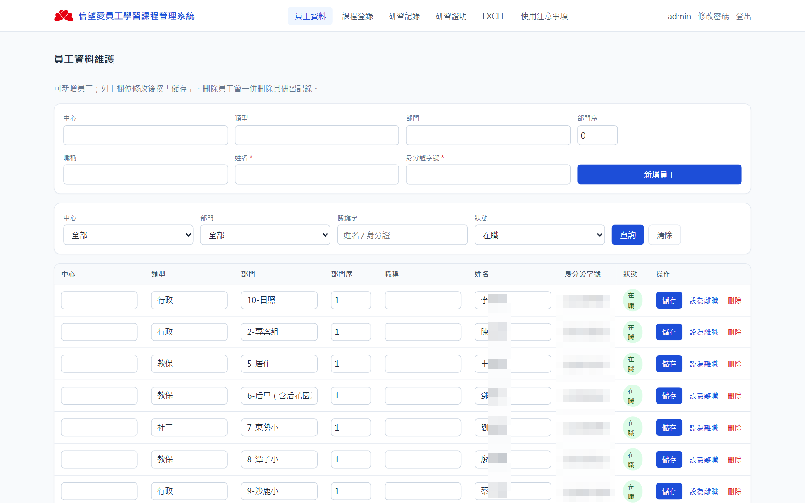
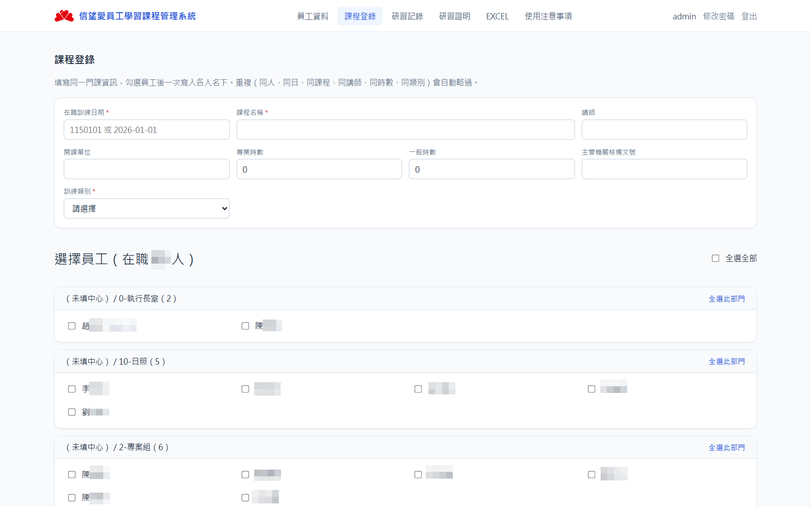
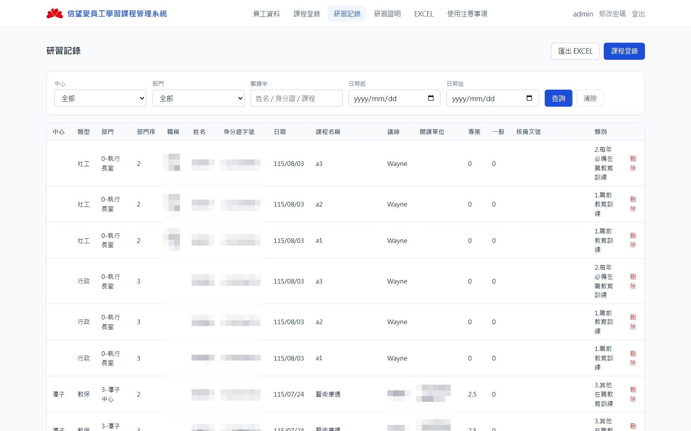
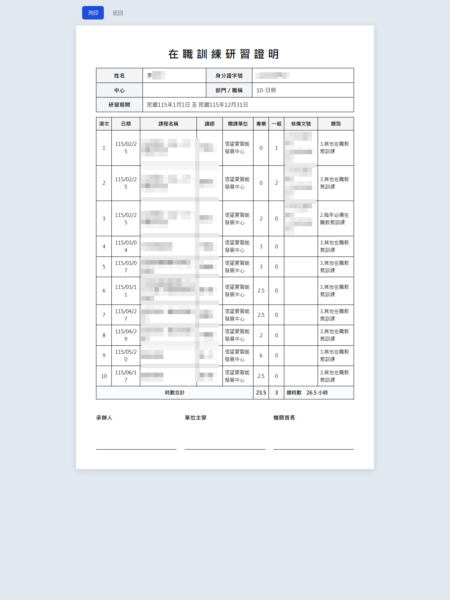
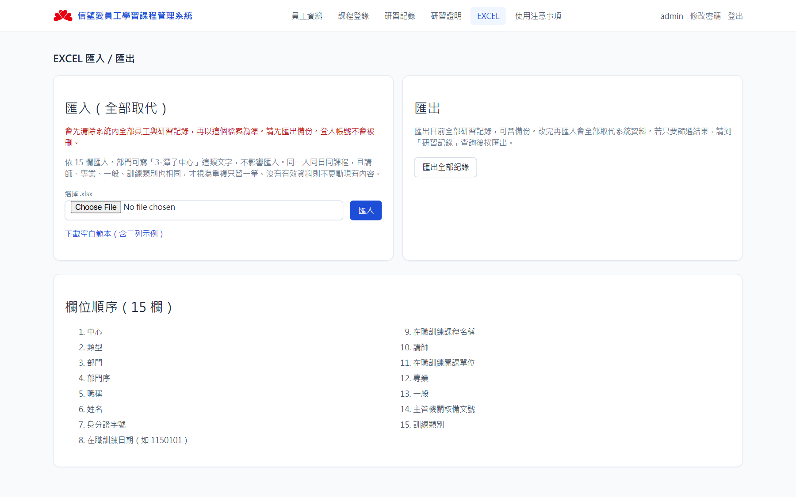
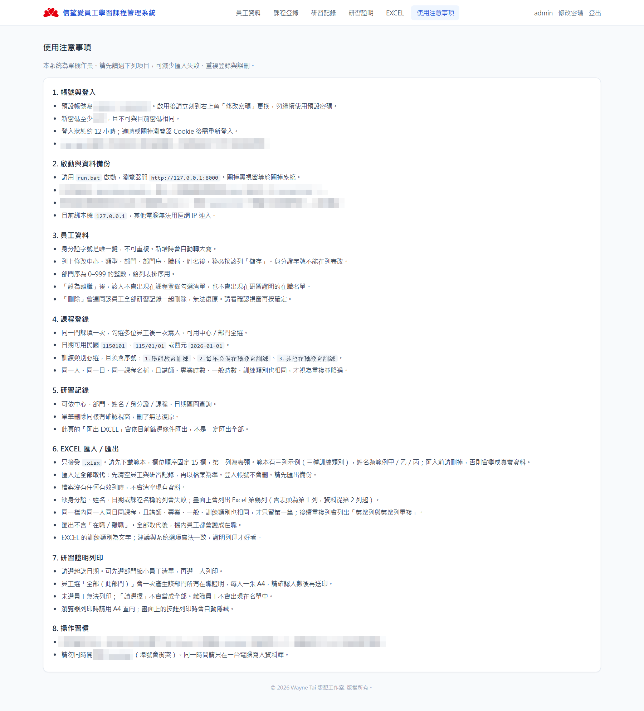

登錄一次、寫給多人
同一門課填日期、課名、講師、時數與訓練類別，勾選員工後一次寫入。同人同日同課且講師／時數／類別相同會自動略過。
單機 · Windows · 不連外網
給社福機構把在職訓練從 Excel 收成可查、可印、可備份的一套本機系統。員工、研習記錄、證明列印、15 欄匯入匯出都在瀏覽器裡完成。
同一門課填日期、課名、講師、時數與訓練類別，勾選員工後一次寫入。同人同日同課且講師／時數／類別相同會自動略過。
依部門篩員工，產出 A4 在職訓練研習證明。跨頁只在最後一頁印時數合計，表頭仍會重複。
15 欄固定格式。匯入是全部取代（先清再寫），請先匯出。缺欄會指出 Excel 第幾列；重複列也會列出列號。
以下截圖取自本機執行中的系統，未改過程式。長列表頁以一屏為準。
出廠帳號，啟用後請立刻更換。畫面底部有版權標註。

身分證字號當唯一鍵。列表可改中心、類型、部門、部門序、職稱、姓名後按該列儲存。可設離職或刪除（研習一併刪）。

日期支援民國 1150101 或西元。訓練類別為：1.職前教育訓練、2.每年必備在職教育訓練、3.其他在職教育訓練。可全選或依部門全選在職員工。

依中心、部門、姓名／身分證／課程、日期區間查詢。此頁「匯出 EXCEL」只出目前篩選結果，不是一定全部。
先選部門縮小名單，再選一位員工，或明確選「全部（此部門）」。停在「請選擇」不會當成全員列印。

每人一張 A4。欄位含日期、課程、講師、開課單位、專業／一般時數、核備文號、類別。時數合計只出現在最後一頁。瀏覽器列印時按鈕會隱藏。

匯入會清掉全部員工與研習再以檔案為準（登入帳號保留）。部門可寫「3-潭子中心」。同一人同日同課，且講師、專業、一般、訓練類別也相同，才視為重複。

帳號、備份、匯入規則、列印習慣都寫在系統內，給現場人員直接翻。頁尾同樣有版權標註。
須驗證目前密碼。新密碼至少 XX 字，不可與舊密碼相同。
Python 3.11+，雙擊 run.bat。第一次要上網裝套件。
綁本機 127.0.0.1，區網連不進。同時只開一份。Win10／Win11 64-bit；Server 2019（有桌面）可測。